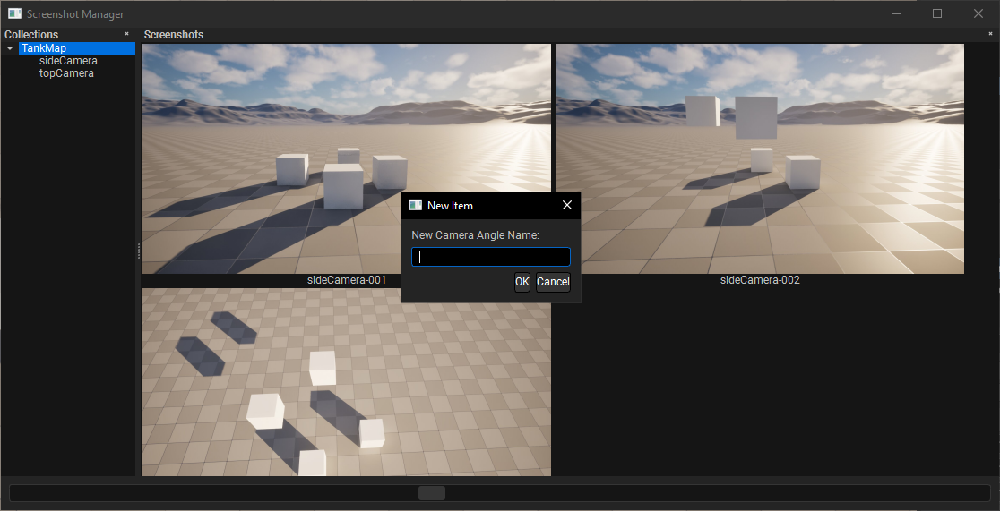

UE5 Screenshot Tool
Limitations in UE5's Bookmark and Screenshot Systems
- Bookmark Limitations: Supports only 10 slots, lacks visualization, and isn't easily shareable.
- Screenshot Tool Limitations: Doesn't link screenshots to camera positions, lacks version tracking, and can't capture multiple angles at once.
How My Tool Improves the Workflow
- Unlimited Bookmarks stored in a JSON file for easy sharing.
- Links screenshots to specific camera positions for consistent shot reproduction.
- Provides preview images for quick browsing.
- Enables fast screenshot comparisons with overlay/toggle options.
- Allows comments/feedback tied to specific camera angles.
Future
- Overlay/Toggle Mode for comparing old and new screenshots.
- Quick Commands to run before screenshots, such as disable HUD and load maps.
- Watermarking with details like artist name, date, and version.
